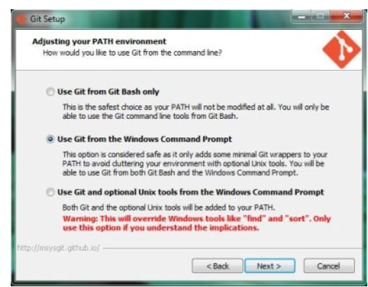
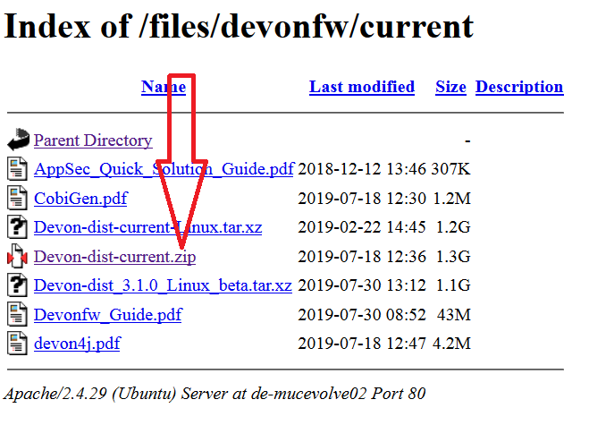
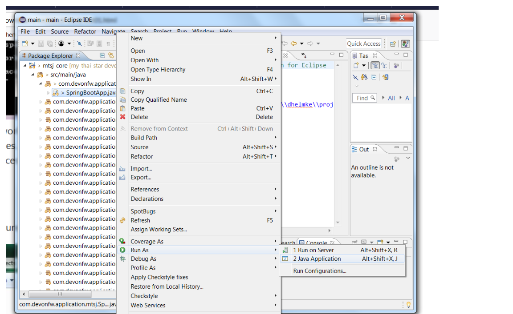

IDE Setup
This Tutorial explains how to setup the development environment to work on and contribute to devonfw4j with your Windows computer.
We are using a pre-configured devon-ide for development. To get started follow these steps:
-
Get a Git client. For Windows use:
-
Important: install with option Use Git from the Windows Command Prompts but without Windows Explorer integration.
 -
Download TortoiseGit from https://tortoisegit.org/
-
-
Download the distribution
-
If you are a member of Capgemini: download the current devonfw distribution (for devonfw please find the setup guide within the devon-dist).

-
-
Choose a project location for your project (e.g.
C:\projects\devonfw, referred to with$projectLocin this setup guides following steps). Avoid long paths and white spaces to prevent trouble. Extract the downloaded ZIP files viaExtract Here(e.g. using 7-Zip). Do not use the Windows native ZIP tool to extract as this is not working properly on long paths and filenames. -
Run the script
update-all-workspaces.batin$projectLoc.Hint: You can use update-all-workspaces.bat whenever you created a new folder in
workspacesto separate different workspaces. This update will create new Eclipse start batches allowing to run a number of Eclipse instances using different workspaces in parallel. -
Open
console.batand check out the git repositories you need to work on intoworkspaces\main. with the following commands:cd workspaces/main git clone --recursive https://github.com/devonfw/my-thai-star.gitDo another check whether there are files in folder
workspaces\main\my-thai-star\! -
Run the script
eclipse-main.batto start the Eclipse IDE. -
In Eclipse select
File > Import > Maven > Existing Maven Projectsand then choose the cloned projects from your workspace by clicking theBrowsebutton and select the folder structure (workspaces\main\my-thai-star\java\MTSJ). -
Execute the application by starting the
SpringBootApp. Select the class and click the right mouse button. In the context menu select the entryRun as ⇒ Java Application(orDebug as …). The application starts up and creates log entries in the Eclipse Console Tab. -
Open
console.bat. -
Go to the folder
workspaces\main\my-thai-star\angularin theconsole.batterminal. -
Execute the command:
yarn install. Wait till everything is finished. -
Execute the command:
yarn start. -
Once started, the sample application runs on http://localhost:4200/restaurant, login with waiter/waiter and have a look at the services list provided.
Next Chapter: Creating a devon4j Project